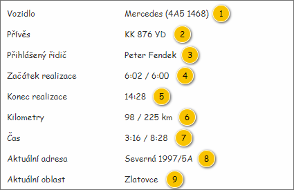

Panel slouží k zobrazení souhrnných informací o Realizaci denního výkonu. Vstupem panelu jsou pak následující data:
Poznámka: Panel je zobrazován v rámci ToolTipu – je tedy dostupný pouze v případě, kdy je na vstupu předána hodnota.

| Callout | Komponenta | Nadpis | Typ komponenty | Příklad hodnoty | Hodnota | Výchozí hodnota | Formát | Zpřístupněná | Viditelná | Chování | Validace | Poznámka |
|---|---|---|---|---|---|---|---|---|---|---|---|---|
| 1 | Přiřazené vozidlo | Vozidlo | Label | Mercedes (4A5 1468) | Entita Vozidlo – atribut Vozidlo entity Denní výkon – atribut Denní výkon entity Realizace denního výkonu. | – | – | Pokud je hodnota k dispozici. | – | – | Pokud není vozidlo k dispozici, není položka zobrazena vůbec. | |
| 2 | Připojený přívěs | Přívěs | Label | KK 876 YD | – | – | Pokud je hodnota k dispozici. | – | – | Je zobrazeno pouze pro dnešní datum. V minulosti se položka již nezobrazuje. | ||
| 3 | Přihlášený řidič | Přihlášený řidič | Label | Peter Fendek | – | – | Pokud je hodnota k dispozici. | – | – | Je zobrazeno pouze pro dnešní datum. V minulosti se položka již nezobrazuje. | ||
| 4 | Začátek realizace | Začátek realizace | Label | 6:02 / 6:00 | Entita Realizace denního výkonu. | – | Pokud není konkrétní hodnota k dispozici, je místo ní zobrazen zástupný text: „–“ (ALT+0150). | – | Vždy | – | – | – |
| 5 | Konec realizace | Konec realizace | Label | 14:35 / 14:28 | Entita Realizace denního výkonu. | – | Pokud je Realizace denního výkonu ukončena (hodnota atributu Ukončena je rovna TRUE):
Jinak:
Pokud není konkrétní hodnota k dispozici (případně alespoň jedna hodnota v rámci skupiny – viz prováděný součet), je místo skupiny zobrazen zástupný text: „–“ (ALT+0150). | – | Vždy | – | – | – |
| 6 | Kilometry | Kilometry | Label | 98 / 225 km | Entita Realizace denního výkonu. | – | Pokud není konkrétní hodnota k dispozici, je místo ní zobrazen zástupný text: „–“ (ALT+0150). | – | Vždy | – | – | – |
| 7 | Čas | Čas | Label | 3:16 / 8:28 | Entita Realizace denního výkonu. | – | Pokud není konkrétní hodnota k dispozici, je místo ní zobrazen zástupný text: „–“ (ALT+0150). | – | Vždy | – | – | – |
| 8 | Aktuální adresa | Aktuální adresa | Label | Severná 1997/5A | – | – | Pokud je hodnota k dispozici. | – | – | Je zobrazeno pouze pro dnešní datum. V minulosti se položka již nezobrazuje. | ||
| 9 | Aktuální oblast | Aktuální oblast | Label | Zlatovce | Data získaná z pozice | – | – | Pokud je hodnota k dispozici. | – | – | Je zobrazeno pouze pro dnešní datum. V minulosti se položka již nezobrazuje. |
Určité položky detailu vyžadují získání hodnoty, která odpovídá poslední dostupné pozici Vozidla – je tedy zobrazován aktuální stav dané položky. Podrobný postup, jak získat odpovídající hodnoty, je pak uveden v tabulce.
Poznámka:
| Callout | Komponenta | API | Vlastnost | Získaná hodnota | Zobrazená hodnota | Formát zobrazené hodnoty | Poznámka |
|---|---|---|---|---|---|---|---|
| 2 | Připojený přívěs | Podřízené objekty připojené pro danou pozici
| cwiTrailers
| Je vrácena kolekce připojených objektů, kdy každý z těchto objektů obsahuje ID odpovídajícího Přívěsu. | Pro získané ID jsou následně nalezeny odpovídající Přívěsy dostupné přímo v DB modulu RoadPlan. Výstupem je tedy kolekce instancí entity Přívěs. | Pokud je získán právě jeden Přívěs: Pokud je získán více než jeden Přívěs: | Pokud není získán žádný Přívěs, není položka zobrazena vůbec, a to i v případě, kdy není nalezen Přívěs pro žádný ze získaných ID. |
| 3 | Přihlášený řidič | driverId | Je vrácena hodnota představující ID entity Zaměstnanec. | Pro získané ID je následně nalezen odpovídající Zaměstnanec dostupný přímo v DB modulu RoadPlan. Výstupem je tedy instance entity Zaměstnanec. | Pokud není získán žádný Zaměstnanec, není položka zobrazena vůbec, a to i v případě, kdy není nalezen Zaměstnanec se získaným ID. | ||
| 8 | Aktuální adresa | Pozice pro objekt a čas | position
| Jsou vráceny souřadnice konkrétní pozice. | Získané souřadnice jsou odeslány na mapový server, který vrátí odpovídající Adresu. Výstupem jsou tedy data, která svou strukturou odpovídají entitě Adresu. | Pokud není dostupné Číslo orientační:
Pokud není dostupné Číslo popisné:
| Pokud nebylo pro získané souřadnice nalezena žádná Adresa, není položka zobrazena vůbec. |
| 9 | Aktuální oblast | Pozice pro objekt a čas | areas
| Je vrácena kolekce uživatelských oblastí, kdy každá z těchto oblastí obsahuje přímo svůj název. | Pro každou nalezenou oblast je zobrazen její název získaný přímo z API. Výstupem je tedy kolekce typu Textový řetězec. | Pokud je získána právě jedna uživatelská oblast: <Řetězec> Pokud je získána více než jedna uživatelská oblast: <Řetězec>, …, <Řetězec> | Pokud není získána žádná uživatelská oblast, není položka zobrazena vůbec. |
Určité položky detailu se zobrazují pouze v případě, kdy je zkoumána právě prováděná Realizace denního výkonu (v dnešní den), nejedná se tedy o historická data. Informace, zda se mají jednotlivé položky zobrazovat, je získána pomocí hodnoty atributu Ukončena entity Realizace denního výkonu: